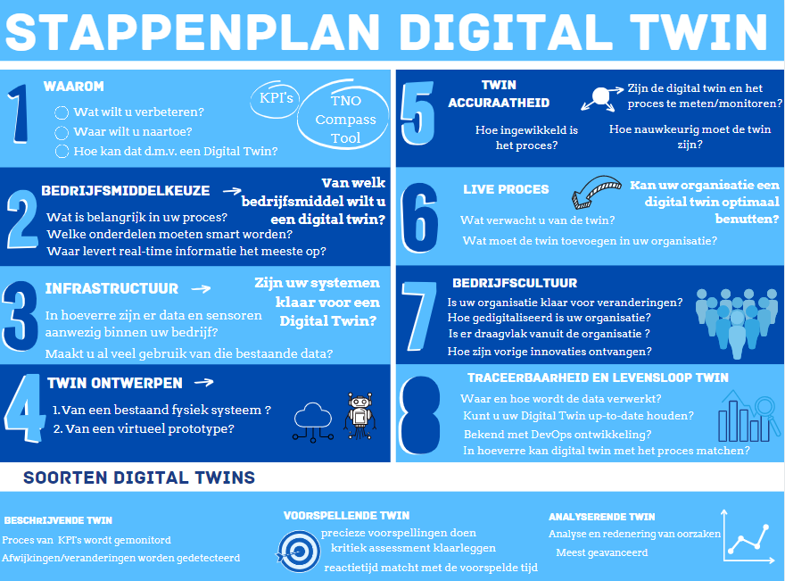

Het project
Het project hebben wij uitgevoerd in opdracht van TNO. TNO is een onafhankelijke onderzoeksinstantie. Zij zijn al langer bezig met onderzoek naar Digital Twins in combinatie met het mkb. Dit omdat TNO betrokken is bij het Europese project Change2Twin. Dit project is gefund door het Horizon 2020 Research and Innovation Programme van de Europese Unie. In dit kader probeert TNO digital twins toegankelijker te maken voor het mkb. Dus hoe krijg je mkb-ers zo ver om daadwerkelijk te innoveren en een digital twin te gaan gebruiken. Aan ons de taak om hierin bij te dragen door middel van het gesprek aangaan met het mkb en te kijken hoe dit voor elkaar te krijgen. Dit alles onder de begeleiding van Jeroen Broekhuijsen, Team lead Digital Twinning bij TNO.
Wat hebben wij gedaan
Aangezien dit project al langer loopt heeft TNO al veel informatie omtrent digital twins. Deze informatie bestond uit onderzoeken, de opzet van een learning module, eerder gegeven presentatie, verzamelde data en nog veel meer. Hier kregen wij ook allemaal toegang tot. Deze informatie was zo enorm veel en diepgaand dat het ons al enige tijd kostte om het te verwerken en te begrijpen. Wat het nog lastiger maakte is dat wij voordat wij aan dit project begonnen nog nooit van een Digital Twin gehoord hadden. Om zelf eerst meer te leren over Digital Twins en alles wat daarbij komt kijken hebben wij eerst zelf ook onderzoek gedaan hiernaar. Daarbij hebben wij onder andere een online seminar gevolgd van Avenade. Ook hebben wij met meerde mensen gesproken die al bezig zijn met Digital Twins op verschillende manieren. Zo hebben wij gesproken met Jan-Fokke Post, business consultant bij Planon en Bram de Vrught business manager bij Qing. Zij konden ons vanalles vertellen over de verschillende soorten Digital Twins, de Digital Twins waar zij mee werken en nog veel meer. Ook zijn wij op bedrijfsbezoek geweest bij XR4Industry. Hier kregen wij een rondleiding van de oprichter en directeur Johan Reijers. Tijdens deze rondleiding hebben wij gezien wat zij doen met virtual reality maar ook hun werkende Digital Twin. Deze ziet u hieronder. Ook bood hij ons daar een plek om op dat moment direct verder te werken aan het project.

Al deze informatie hebben wij als eerste vereenvoudigd en overzichtelijker gemaakt. In het achterhoofd houdende dat een mkb-er geen zin en tijd heeft om presentaties van 80+ pagina's te bekijken of enorme en diepgaande documenten die in het engels geschreven zijn te lezen. In samenspraak met Jeroen hebben wij besloten deze informatie in een overzichtelijke presentatie te zetten die niet langer duurt dan een half uur met daarin de speerpunten omtrent Digital Twins. Deze presentatie konden wij dan voorleggen aan het mkb om te kijken of alles op deze manier ook juist overgebracht kon worden. Met de feedback die wij van het mkb terugkregen op deze presentatie hebben wij constant aanpassingen gedaan wat uiteindelijk deze presentatie opleverde. Deze presentatie kan Jeroen en/of TNO gebruiken in hun verdere gesprekken met het mkb buiten deze opdracht.
In deze presentatie ziet u verschillende dingen voorbij komen. Veel voorbeelden van Digital Twins en de toepassingen hiervan. Deze voorbeelden zijn deels zelf gemaakt en deels verkregen van onze eerdere gesprekspartners. Verder komt in de presentatie het stappenplan dat wij hebben gemaakt naar voren. Dit stappenplan is gebasseerd op de learning module die TNO heeft ontwikkeld voor mkb-ers die bekend willen raken met Digital Twins. Waar zij dan aan moeten denken, wat zij willen, waar zij nu al staan etc. Hieronder ziet u dit stappenplan.
Producten
Uiteindelijk hebben wij dus een stappenplan opgeleverd.
Een presentatie ontworpen voor TNO om te gebruiken in hun verdere contacten met het mkb.
In Unity en SolidWorks zelf voorbeelden van Digital Twins gemaakt die TNO kan gebruiken. Deze staan allemaal in onze eindpresentatie zoals wij die geven bij het seminar. De gemaakte filmpjes staan voor de eenvoud ook hieronder.
Een eindrapport voor Jeroen en TNO met daarin alle bevindingen naar aanleiding van dit project. Deze bevindingen gaan voornamelijk over wat wel en niet werkt in het contact met mkb. De verschillen bij mkb-ers en hoe om te gaan met verschillen in kennis niveaus omtrent Digital Twins. Deze is op het moment van shrijven nog niet volledig omdat wij met de opdrachtgever een latere datum voor het opleveren hiervan hebben afgesproken dan de deadline voor dit portfolio.